Kickstart Programming
著者: Shuntaro Nishizawa, Shibaken28, hiroki-1219, yu1hpa
この資料は長野高専情報技術研究部の新入部員向けの資料です。 新入部員向けにプログラミングの基礎から、Linuxコマンド、Git/GitHubなど様々ことについて記載しています。
もし資料にミスや不明な点等があれば、このリポジトリにIssueとしてご報告ください。
WSL2とは
WSL2(Windows Subsystem for Linux 2)は、Windows10上でLinuxを動作させることができる仕組みです。(LinuxはWindowsと同じOSの一種です。詳細については他の資料を参照してください。)
（J科生はCygwinを学校で導入したと思います。これとWSL2は似ている存在ではありますが、実現方法は全く違います。また、利点はCygwinよりもWSL2のほうが多いです。）
利点としては、以下の例が挙げられます。
- ファイルにアクセスする速度が早い
- 原理上Linuxと100%の互換性がある
- Linuxと互換性があるため、Linuxの機能は全て使える
以上の利点から、ここではWSL2を導入していきます。 （CygwinはWSL2を導入しても使うことができるので、アンインストールする必要はありません。）
WSL2の導入
WSL2を導入していきます。導入はMicrosoftの公式ドキュメントの手順で行っていきます。
1.Linux用Windowsサブシステムを有効にする
Windows上にLinuxディストリビューションをインストールする前に、まず "Linux用Windowsサブシステム"を有効にする必要があります。
はじめに、管理者としてPowerShellを開きます。
Windowsの検索窓からPowerShellと入力し、「管理者として実行する」を選択してください。

選択した後、「このアプリがデバイスに変更を加えることを許可しますか？」と尋ねられるので、「はい」を選択してください。
PowerShellが起動したら、以下のコマンドを実行してください。
dism.exe /online /enable-feature /featurename:Microsoft-Windows-Subsystem-Linux /all /norestart

「操作は正常に完了しました。」と表示されたら、"Linux用Windowsサブシステム"が有効になりました。次の手順に進みましょう。
2.WSL2の実行に関する要件を確認する
WSL2は、以下のシステム要件が必要です。
- x64システムの場合:バージョン1903以降、ビルド18362以上
- ARM64システムの場合:バージョン2004以降、ビルド19041以上
設定からシステム>詳細情報へ進んで、"システムの種類"・"バージョン"・"OSビルド"を 確認してください。

上記のシステム要件を満たしていることを確認できたら、次の手順に進みましょう。
3.仮想マシンの機能を有効にする
WSL2をインストールする前に、"仮想マシンプラットフォーム"を有効にする必要があります。
PowerShellを閉じた場合は、もう一度管理者としてPowerShellを開いてください。
PowerShellで以下のコマンドを実行してください。
dism.exe /online /enable-feature /featurename:VirtualMachinePlatform /all /norestart

「操作が正常に完了しました。」と表示されたら、仮想マシンプラットフォームが有効になりました。
有効化したことを確認したら、コンピュータを再起動してください。コンピュータを再起動しないと、Linux用Windowsサブシステムと仮想マシンプラットフォームは完全に有効化されません。
コンピュータが再起動できたら、次の手順に進みましょう。
4.Linuxカーネル更新プログラムパッケージをダウンロードする
Linuxカーネル更新プログラムパッケージの最新のパッケージをダウンロードします。
"2.WSL2の実行に関する要件を確認する"で確認した"システムの種類"に応じて以下のパッケージをダウンロードしてください。
x64マシン用WSL2 Linux カーネル更新プログラムパッケージ
ARM64マシン用WSL2 Linux カーネル更新プログラムパッケージ
ダウンロードしたら、更新プログラムパッケージを実行します。
エクスプローラーを開いて、ダウンロードフォルダへ進み、"wsl_update_x64.msi"を実行し、更新プログラムパッケージをインストールしてください。（ブラウザから、ファイルを直接実行しても大丈夫です。）
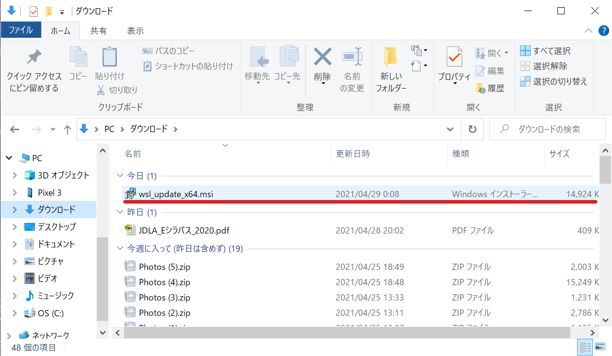（管理者特権のアクセス許可を求めるメッセージが表示される場合があるので、「はい」を選択して、このインストールを承認してください。）
インストールが完了すると、次のウィンドウが表示されます。

表示されたら、"Finish"を選択し、次の手順に進みましょう。
5.WSL2を既定のバージョンとして設定する
新しいLinuxディストリビューションをインストールする際の規定のバージョンとしてWSL2を設定します。
PowerShellを開いて（今回は管理者としてPowerShellを開く必要はありません） 以下のコマンドを実行してください。
wsl --set-default-version 2
「WSL2との主な違いについては、https://aka.ms/wsl2を参照してください」と表示されたら、WSL2が既定バージョンに設定されました。次の手順に進みましょう。
6.選択したLinuxディストリビューションをインストールする
ディストリビューションとはOSを構築するための必要な諸々のソフトも含めた配布形態のことです。今回は"Ubuntu"を選択します。（他にも、CentOS・KaliLinuxなどたくさんのディストリビューションがあります。）
Microsoft Storeを起動して"Ubuntu"と検索し、Ubuntuを選択してください。
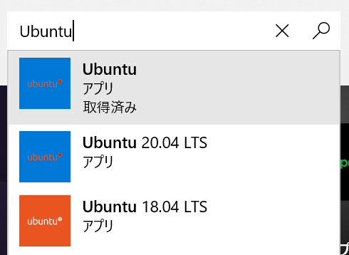表示されたページの「入手」を選択してください。Ubuntuのインストールが開始されます。 （下の画像では、Ubuntu 20.04 LTSになっていますが、操作は変わりません。）

インストールが完了すると、右下に以下の通知が表示されるので、起動を選択してください。 （スタートメニューからUbuntuを選択して実行しても大丈夫です。）

少し待つと、Ubuntuで使用するユーザーネームとパスワードの設定を求められるので入力してください。
ここで設定したパスワードの使用頻度はかなり多い（ソフトウェアのインストールなど、管理者レベルの操作で必要）ので、必ず覚えておく、またはメモとして取っておくようにしてください。

コマンドが打ち込める状態になったら、WSL2の導入は終了です。これで、Windows10上でLinux（Ubuntu）を扱うことができるようになりました。
WSL2上でUbuntuを使うときはスタートメニューからUbuntuを選択して、実行することで、 使用することができます。（または、自分の好きなターミナルを設定して、WSL2を使用することもできます。）

Processingをはじめよう
Processingって何
絵が描けるアプリケーションです．コードで絵を描きます．
なんでProcessingなの
C言語をコマンドプロンプトの文字だけの真っ黒な画面でやるよりも楽しいしわかりやすいと思うからです． そして，環境構築が楽だからです．
ProcessingをDLしよう
こちらのサイトで環境を選べばDLが始まります． DLしたファイルを開いて指示に従えばDL完了です．Processing.exeとかProcessing.appを実行すれば，もうさっそくプログラム作成ができます．
Q&A
Q:日本語が打てねぇぜ，あと文字小さい
- ファイル/設定/から日本語が使えるフォントと選びます．文字サイズもそこで変更できます．
Q:簡単すぎてつまらん
- 発展チャプターを用意してあります．
Q:いやなんもわからん
- 先輩かわかる同級生に聞いてみよう！
図形を描いてみよう
今回の目標
円や長方形で構成された簡単な絵が描ける．
具体的には次の絵を描くことが目標です．

実際に図形を描く
コードを書いてみよう
次のコードを入力してみましょう．最後のセミコロン(;)を忘れずに．
size(500,400);

実行しよう
ウィンドウに再生マークのボタンがありますね．クリックすると実行されます．新しく画面(ウィンドウ)が表示されました．
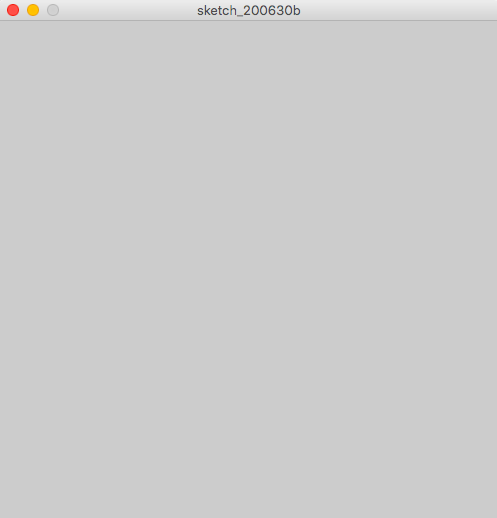
- 実行ボタンを押してもウィンドウが表示されなかったらもう一度コードを確認してみよう．どこかが間違っているはず．
数字を変えてみよう
size(500,400);
の(500,400)と入力したところを別の数字にしてみましょう．
例えば
size(600,100);
と入力して，実行をすると
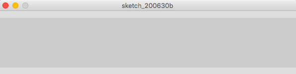
横長になりました．
さて，お気づきの方もいるかもしれませんが，このsize(数字,数字);というのは画面のサイズを指定しています．具体的には，size(x,y);というコードは画面の横の長さをx，縦の長さをyにする，という意味を持っています．
コードを書いてみようその2
次のコードを入力してみましょう．入力し終わったら，実行ボタンを押して実行しましょう．
size(500,400);
rect(100,200,300,100);
次のような画面が表示されます．
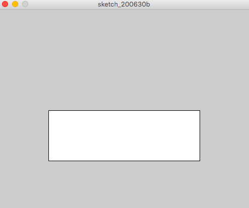
画面内に白い長方形が描かれました．数字をいろいろ変えて，この数が何を意味するのかを考えてみてください．
rectの正体
rect(a,b,c,d)を実行すると座標(a,b)を左上とする，横の長さc，縦の長さdの長方形が描かれます．
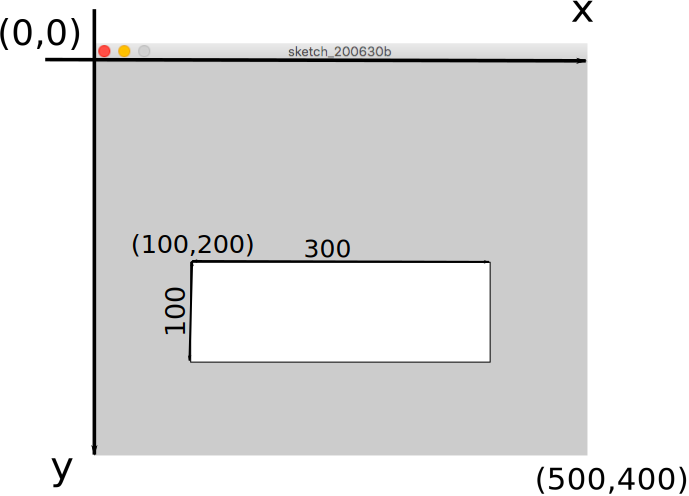
ここでの座標というのは数学でもでてきた平面での場所を表す数字です．上の図のように，画面の左上を原点としProcessingの世界では，xは右方向が正，yは下方向が正，と決まっています．y座標が下に行くほど増えていくところに注意です．
- Processingに対して「画面描いて！」とか「正方形描いて！」みたいに命令しているので，「命令」と呼びます．
練習
演習2-1
横600,縦300のウィンドウに，左上の座標が(100,50)で横の長さが200,縦の長さが100の長方形を描け．
演習2-2
横450,縦600のウィンドウに，左上の座標が(100,100)で右下の座標が(400,400)の正方形を描け．
解答例
解答例:コードを書いてから答えをみよう！
size(600,300);
rect(100,50,200,100);
演習2-2：rect(a,b,c,d)のc,dは座標ではなく辺の長さです．辺の長さは400-100=300なので，cとdは300にする必要があります．
size(450,600);
rect(100,100,300,300);
他の図形を描く
さきほどのrect()の他にも，三角形などを描く方法があります．
表にまとめてありますが，これらを頑張って覚える必要はありません．なぜなら，リファレンスをみればわかるからです．
| 方法 | 起こること |
|---|---|
point(x,y) | 座標(x,y)に点をうつ |
line(x1,y1,x2,y2) | 座標(x1,y1)と座標(x2,y2)が両端の線分を描く |
ellipse(x,y,a,b) | 座標(x,y)を中心に横軸がa，縦軸がbの楕円を描く1 |
triangle(x1,y1,x2,y2,x3,y3) | (x1,y1) と (x2,y2) と (x3,y3) をつなぐ三角形を描く |
fill(r,g,b) | この命令の後に描く図形の内部は色(r,g,b)2で塗られる |
stroke(r,g,b) | この命令の後に描く図形の輪郭は色(r,g,b)で塗られる |
- 上の表のxやaのことを引数(引数)と呼びます．
aとbを同じ数cにすれば直径がcの円が描けます．例えばellipse(10,10,7,7)は中心(10,10)直径7の円を描きます．
色の指定方法については補足資料をご覧ください
fillの使い方を示します．
size(400,200);
ellipse(100,100,80,80);
fill(255,0,0);//ここから後に描く図形を赤く塗る
ellipse(300,100,80,80);

ここで注意するのが，プログラムは上から下へ順番に実行されるということです．
プログラム中にある//ですが，コメントといい，//以降の文字列は改行があるまで無視されます．また，/*と*/で囲まれた文字列も無視されます．
size(400,300);
//コメント
/*
終点が明確である
コメント
*/
ellipse(x,y,200,200/*部分*/);
練習
演習2-3
画像のように日本の国旗をかけ．アスペクト比などは厳密でなくて良い．※デフォルトの背景色は灰色で白くないので白くすること． 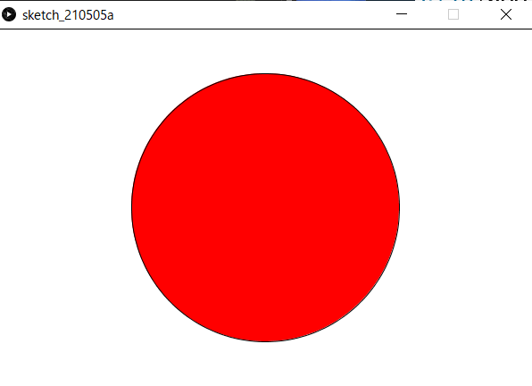
解答例
解答例
size(600,400);
fill(255,255,255);
rect(0,0,600,400);
fill(255,0,0);
ellipse(300,200,300,300);
作る
数種類の図形でオリジナルの絵(思いつかなかったら信号)を書いてみましょう．
私は顔を書いてみました．
size(600,600);
ellipse(300,300,200,200);
fill(0,0,0);
ellipse(250,280,50,50);
ellipse(350,280,50,50);
line(250,350,350,350);
実行結果はこちらです．
変数
今回の目標
変数の使い方と，使う利点がわかる．
定義と代入
変数とは
別の言葉を使って例えるのならば箱です．何かを入れて保管(記憶)しておくことができます．
変数の宣言
int a;
これでaという名前の変数が作られました．intは「整数を入れる変数を作れ」という意味です．
実行してでてきた小さいウィンドウ1は無視しましょう．
size();関数で何も設定しなかったので最小サイズのウィンドウがでてきてしまいました．
変数に数を入れる
このままだと，変数が空っぽなので数を入れます
int a;
a=6;
a=6の行が追加されました．これでaという名前の変数に6という数字が入りました．注意するのは，ここでのイコール(=)は，等しいという意味ではありません．イコールの右にある数をaに「代入する」という意味です．
ところで，本当にaに6が入っているかどうか気になりますね．そこで，aという変数の中に何が入っているかを確認します．
int a;
a=6;
print(a);
下の黒いところがコンソールです．
print();命令は，コンソールに表示させる命令です．

実行ボタンを押すとそこに6と表示されます．
地味ですね．別の数字も試して，結果がどうなるかを確認しましょう．また，次のコードのように定義と代入を同時に行うことができます．
int a=6;
print(a);
変数は別に一文字でなくてもよいです．
int apple=6;
int grape=4;
print(apple,grape);
このように変数に適切な名前を付けることで何を表しているのかを分かりやすくできます．
変数の命名ですが，
- アルファベット(大文字小文字問わない)かアンダーバーで始まる
- 一文字目以外はアルファベット，数字，アンダーバーのみで構成されている ことがルールです．
int w1000000007ushitapunikiakun;//よい
int _x;//よい
int 3_e;//エラー
変数を使用するときのエラー
今度は値を代入せずに表示させます．
int a;
print(a);
実行すると

英語ができてました．エラー文といいます．これを読んで何がエラーの原因なのかを考えます．英語が読めなかったらGoogle先生に任せましょう．
原因はaに何も値を入れていないことです．「aという変数を作ったけれど，中身は空っぽなので表示できません！」という意味です．変数の中身を使う場合は中身を入れてあるかに注意しましょう．
また，int aでaという名前の変数を作らなかった場合もエラーになります．
a=28;
print(a);

他にも，同じ名前の変数は作れないルールがあります．2．
int a;
int a;//変数名は被ってはいけない(エラー)
a=2;
厳密には，同じブロック内でなければ問題ありませんが，今は気にしなくてよいです．
式で代入
int a;
a=1+3;
print(a);
このように式で代入することもできます．
| すること | 演算子 | 例 | aの値 |
|---|---|---|---|
| 足し算 | + | a=24+41 | 65 |
| 引き算 | - | a=5-12 | -7 |
| 掛け算 | * | a=25*8 | 200 |
| 割り算3 | / | a=76/19 | 4 |
| 割った余り4 | % | a=25%4 | 1 |
整数同士で割り算をすると，小数点以下は切り捨てられます．10/3=3,3/4=0となります．
数学でいうと合同式のmodのようなものです．例えば，整数aの一の位はa%10で得ることができます．
変数を使って計算することも可能です．電卓みたいですね．
int grape=3;
int apple=5;
int fruit=grape+apple;
print(fruit);
int side=9;
int volume=side*side*side;
print(volume);
演算は括弧を使うことも可能です．
int a=5;
int b=3;
int c=(a+b)*(a-b);//8*2
print(c);//16
一行目ですが，
int a=5;
int b=3;
次のコードを確認しましょう．
int a=5;
a=a+6;
print(a);
このプログラムは少しトリッキーに見えるかもしれませんが，理路整然とシュミレーションしてみれば難しくありません．aという名前の変数にa+6の結果を代入するという意味ですが，このときのaは5ですので，aには5+6の11が代入されます．
プログラムは上から下へ順番に，書いてあること通りに実行されていきます．これは，当たり前のように感じますが，慣れていない頃は意外と忘れがちです．
また，セミコロンで区切ってさえあれば同じ行に命令を連ねることができますが，これは左から順番に実行されていきます．
次のソースコードでは，a=bとb=aが同じ行にあり，同時に実行するように見えるかもしれませんが，そんなことはありません．a=b;のあとに改行したコードと全く同じ意味になります．
int a=5;
int b=3;
a=b;b=a;
print(a,b);
int a=5;
int b=3;
a=b;
b=a;
print(a,b);
逆に，一行に詰め込むことも可能です．
int a=5;int b=3;a=b;b=a;print(a,b);
演習3-1
次のプログラムを実行して表示される数はいくつか．
int a=5; int b=3; a=a+b; b=a-b; print(b);
演習3-2
二つの変数の値を入れ替えるにはどうすればよいか
int a=5; int b=3; //何らかの処理 print(a,b);//a=3,b=5を得たい
解答
解答
a=a+b;//a=5+3 aが8
b=a-b;//b=8-3 bが5
演習3-2： 別の変数を用意すると簡単に実現できます
int a=5;
int b=3;
int t;
t=a //tにaの値を取っておく
a=b; //aに上書きされても
b=t; //tにもともとのaの値が残っている
print(a,b);
また，裏技チックですが，変数を用意しない方法もあります
int a=5,b=3;
a = a + b;
b = a - b;
a = a - b;
println(a,b);
a = a * b;
b = a / b;
a = a / b;
println(a,b);
a = a ^ b;
b = a ^ b;
a = a ^ b;
println(a,b);
この書き方をしたコードを他人にみせたときに，
変数の活用例
打つのが大変なのでコピペ推奨です．
size(600,600);
ellipse(300,300,200,200);
fill(0,0,0);
ellipse(250,280,50,50);
ellipse(350,280,50,50);
line(250,350,350,350);
チャプター2で出てきた顔です． どうしてもこの顔が気に入らなければ別の絵を用意してもらって構いません．
この顔をもう少し右に表示させたくなったとします．そうなると，顔を作っている全ての関数のx座標の値を変えなければなりません．手間です．さらに変更したくなったらまたまたひとつずつ書き換えなければなりません．非常に面倒ですね．そこで，次のように変数を使います．
int x=300;
int y=300;
size(600,600);
ellipse(x,y,200,200);
fill(0,0,0);
ellipse(x-50,y-20,50,50);
ellipse(x+50,y-20,50,50);
line(x-50,y+50,x+50,y+50);
これで，一行目のxとyの初期値さえ変えれば，顔の位置を移動させることができるようになりました．このように，複数の場所に関与して来る数は変数にしておくと汎用性が高くなります．
連ねて宣言
int a=3;
int b=5;
int c=2;
のように毎回intを書くのが面倒だという場合は
int a=3,b=5,c=2;
のようにコンマ(,)で区切って連ねることができます．
動きを作る
目標
図形を動かすことができる

setup()とdraw()
//ここで変数の宣言をする
void setup(){
//初めの設定：変数への代入，size()命令など
}
void draw(){
//ここがずっと繰り返される
}
このようにプログラムを書くと，
- 変数宣言がされる
- setup()内が一度だけ呼び出される
- draw()内が1秒間に60回1繰り返される
厳密には，frameRate()関数で設定した回数だけ処理されます．処理が追いつかないとは減る場合もあります．
例を次に示します．
int x=300,y=300;
void setup(){
size(600,600);
}
void draw(){
ellipse(x,y,100,100);
x=x+1;
}
このプログラムは次のように動作します．
- x=300,y=300として変数が宣言
- ウィンドウサイズを(600,600)に設定
- その後，一秒間に60回，次を繰り返す
- (x,y)が中心の円を書く
- xを1増やす
draw()に円を描くプログラムとx=x+1が入っています．draw()の中は繰り返されるのでxの値がどんどん増えていきます．print(x)を後ろにおいてみるとよくわかります．
draw()は，1秒間に約60回実行されていますので，xは1秒で約60増えています．

さて，この実行結果ですが，xをずらしながら円を描いているので残像がついています．
そこで，draw()の初めで白い画面いっぱいの正方形で画面を塗りつぶして，一回まっさらの状態にします．
int x=300,y=300;
void setup(){
size(600,600);
}
void draw(){
fill(255,255,255);
rect(0,0,600,600);
fill(0,0,0);
ellipse(x,y,100,100);
x=x+1;
}
これで，残像がなくなりました．
さらに動かす
前回使用した顔を描くプログラムについても同じことができます．
int x=300;
int y=300;
void setup(){
size(600,600);
}
void draw(){
fill(255,255,255);
rect(0,0,600,600);//画面を真っ白に
ellipse(x,y,200,200);
fill(0,0,0);
ellipse(x-50,y-20,50,50);
ellipse(x+50,y-20,50,50);
line(x-50,y+50,x+50,y+50);//顔を描く
x=x+1;
}
左方向や斜め方向に移動させるにはどうすればよいでしょうか．また，等速直線運動ではなく等加速度運動にするにはどうすればようでしょうか．
次のプログラムでは，x方向とy方向のそれぞれの速度を変数として定義しています．
x=x+2;y=y+1;のように直接書きたくもなりますが，これを変数として宣言しておくことで汎用性が高いプログラムになります．
int x=300,y=300;//座標
int vx=2,vy=1;//速度
void setup(){
size(600,600);
}
void draw(){
//中略
x=x+vx;
y=y+vy;
}
具体的には，次のプログラムのように加速度を導入したときに，これらの数を変数として宣言しておくと，初期値の設定がはじめの数行でまとめてできるので楽です．
int x=300,y=300;//座標
int vx=-10,vy=0;//速度
int ax=1,ay=0;//加速度
void setup(){
size(600,600);
}
void draw(){
//中略
vx=vx+ax;
vy=vy+ay;
x=x+vx;
y=y+vy;
}
ところで，ここまで作ってきたプログラムは顔が画面外に出てしまうともう戻ってきません．もし画面外に出たとき，戻ってくる，という処理が欲しいですよね？
それを実現するのが次のチャプターで出てくるif文です．
おまけ
int x=300,y=300;
void setup(){
size(600,600);
}
void draw(){
fill(255,255,255);
rect(0,0,600,600);//画面を真っ白に
x=mouseX;
y=mouseY;
ellipse(x,y,200,200);
fill(0,0,0);
ellipse(x-50,y-20,50,50);
ellipse(x+50,y-20,50,50);
line(x-50,y+50,x+50,y+50);//顔を描く
}
分岐処理
目標
次の動きをするプログラムを作成できる

いつ使うのか
ゲームとかでボタンを押すとキャラクターが動きますね．ボタンが押されたときと押されていないときで処理が違います．「もし〜ならこの処理をする」というのが欲しいですね．それがこれから紹介するif文です．
もし〜だったら
「もしAだったらBをする」をプログラムにすると次のコードになります．
if(A){
B
}
Bには命令が入り，Aには条件式が入ります．
| 条件式 | 日本語 |
|---|---|
a==b | aとbが等しい |
a>b | aがbより大きい |
a>=b | aがb以上 |
a<b | aがbより小さい |
a<=b | aがb以下 |
aとbが等しい時の条件式が=ではなく==であることに注意です．
次のプログラムでaの値を変えたり条件式を変えたりして動作を確認しましょう．
int a=100;
if(a==100){ // もし、aが100なら
println("aは100です");
}
if(a>100){// aが100より大きいなら
println("aは100より大きいです");
}
また，条件を連ねたいときは&&を使います．"かつ"と読み替えることができます．次のプログラムはaが100以上，かつaが200未満，という条件になります．
int a=100;
if( 100<=a && a<200 ){ // aが100以上200未満なら
println("aは100以上200未満です");
}
"かつ"(&&)に対して，||1は"または"を表す記号です．
次のプログラムはageが7である，またはageが5である，またはageが3であるときに"七五三"を表示するプログラムです．
見慣れない記号かもしれません，パイプラインと呼びます．キーボードの右上の方にあります．
int age=10000;
if(age==7 || age==5 || age==3){
println("七五三");
}
練習
演習5-1
int score=任意の整数;に対して，scoreが60未満の場合に「留年」と表示するプログラムを作成しなさい．
演習5-2
演習5-1に加えて，scoreが101以上の場合も"留年"と表示するプログラムを作成しなさい．
解答例
解答例:コードを書いてから答えをみよう！
if(score<60){
println("留年");
}
演習5-3:
if(score<60||score>100){
println("留年");
}
else,else if
else（日本語: 他の）は文字通りそうでないときの処理を書きます．
次のif文では，score<60の条件を満たさなかった場合，elseの方が実行されます．
int score=74;
if(score<60){
println("不可");
}else{
println("合格");
}
次の2つのプログラムと実行結果を比較してみましょう
int score=54;
if(score<60){
println("不可");
println("課題を提出してもらったので点数を60点にしてあげます");
score=60;
}else{
println("合格");
}
int score=54;
if(score<60){
println("不可");
println("課題を提出してもらったので点数を60点にしてあげます");
score=60;
}
if(score>=60){
println("合格");
}
実際に使う
前回のチャプターで作った顔が動くプログラムで，xが無限に増え続けるので画面外にいってしまいます．そこでif文を使うと，右端にいったら左端から出てくるようにすることができます．
int x=300;
int y=300;
void setup(){
size(600,600);
}
void draw(){
fill(255,255,255);
rect(0,0,600,600);//画面を真っ白に
ellipse(x,y,200,200);
fill(0,0,0);
ellipse(x-50,y-20,50,50);
ellipse(x+50,y-20,50,50);
line(x-50,y+50,x+50,y+50);//顔を描く
x=x+3;
if(x>700){//もしxが700を超えたら
x=-100;//xを-100に設定する
}
}
y座標についても同じことをしてやると，古いDVDプレイヤーにスクリーンセーバーにありそうなちょっと面白い動きになります．
int x=300;
int y=300;
int vx=9,vy=6;
void setup(){
size(600,600);
}
void draw(){
fill(255,255,255);
rect(0,0,600,600);//画面を真っ白に
ellipse(x,y,200,200);
fill(0,0,0);
ellipse(x-50,y-20,50,50);
ellipse(x+50,y-20,50,50);
line(x-50,y+50,x+50,y+50);//顔を描く
x=x+vx;
y=y+vy;
if(x>700){//もしxが700を超えたら
x=-100;//xを-100に設定する
}
if(y>700){//もしyが700を超えたら
y=-100;//yを-100に設定する
}
}
Chapter 6:繰り返し処理
前提知識
まえおき
processingで次の画像のようなものを描くプログラムを作るにはどうすればよいでしょうか．

ellipse命令を羅列して地獄になる予感がします．そこで，同じ処理や似たような処理を行うのがwhile文，for文です．
size(800,800);
ellipse(0,0,50,50);
ellipse(100,0,50,50);
ellipse(200,0,50,50);
ellipse(300,0,50,50);
ellipse(400,0,50,50);
//...大変
while文
whileには「～の間」という意味があります． プログラム上でも意味は同じで，「Aが正しい間，Bを繰り返し実行」する場合は
while(A){
B
}
と書きます．Aにはif文でも使用した条件式が入ります．
| 条件式 | 日本語 |
|---|---|
a==b | aとbが等しい |
a>b | aがbより大きい |
a>=b | aがb以上 |
a<b | aがbより小さい |
a<=b | aがb以下 |
プログラムを見てみましょう．
int hp=20;
int attack=6;
while(hp>0){
hp=hp-attack;
print(hp);
}
print("GAME OVER");
動作の確認をするために，一個ずつ命令の通りにしたがってシュミレーションしてみましょう．
- hp=20,attack=6として変数が宣言
- while文に入る
- hp>0であるため，中括弧
{}内を実行する - hp=20-6=14となり，14が表示される
- hp>0であるため，中括弧内を実行する
- hp=14-6=8となり，8が表示される
- hp>0であるため，中括弧内を実行する
- hp=8-6=2となり，2が表示される
- hp>0であるため，中括弧内を実行する
- hp=2-6=-4となり，-4が表示される
- hp>0を満たしていないため，while文を抜ける
- hp>0であるため，中括弧
GAME OVERと表示される
注意するのは，まだ繰り返すか否かを判定する場所です．
上の例では，p=hp-attackの時点でhp=-4でhp>0を満たしていませんが，その後のprint(hp)は実行されています．これは，中括弧内の一連の処理を終えてから，まだループするかどうかの判定hp>0を行っているからです．
while文を使えば，次のよう1にすることで100回繰り返すことができます．
int i=1;
while(i<=100){
print(i);
i++;
}
ここで，変数iは繰り返し回数を表していますが，繰り返し処理を行うたびにいちいち準備するのは大変です． そこで，便利なのがfor文です．
i++という書き方については補足資料/演算子をご覧ください
## for文
for文の書式は次の通りです．
for(変数の宣言;条件式;1回繰り返したあとに行う処理){
//処理
}
for(int i=1;i<=100;i++){
print(i);
}
つまり，上のコードは，
- 始めにi=0と宣言
i<=100を満たしている間，次を繰り返すiを表示するiを1増やす
while文と挙動が似ていますね．次のように書き換えることができます2．
int i=1;
while(i<=000){
print(i);
i++;
}
実は，変数iのスコープは異なります．詳しくは補足資料/変数の詳しい話 をご覧ください
for文は，
- 繰り返し用の変数の宣言
- 繰り返し用の変数への加算
- 繰り返しの条件 を同時に設定することができるます．
使い分けですが，繰り返す回数が決まっている場合はすっきり書けるfor文，そうでない場合はwhile文を使うことが多いです．
次のように図形をたくさん連ねる処理を簡単にかけるのはfor，whileの強みです．
size(800,300);
for(int x=50;x<800;x+=100){
ellipse(x,150,100,100);
//中心(x,150),半径100の円
}

演習6-1
1から100までの整数の和は5050ですが，これをfor文かwhile文を使ったプログラムによって計算しなさい．
演習6-2
上の円を横に連なった絵を描くプログラムをwhile文を使って書きなさい．
解答
解答
演習6-1: 5050です．100*(100+1)/2と計算できます．
int sum=0;
for(int i=1;i<100;i++)sum+=i;
print(sum);
繰り返す処理が1文の場合は 中括弧を省略することができます．
演習6-2:
size(800,300);
int x = 50;
while(x<800){
ellipse(x,150,100,100);
x+=100;
}
たくさんの図形を動かそう
次のようにたくさんの図形を描いて動かすことができます．
int x=0;
void setup(){
size(800,300);
}
void draw(){
fill(0);
rect(0,0,800,300);
fill(255);
for(int dx=-50;dx<=800;dx+=50){
ellipse(x+dx, 150, 50, 50);
}
x++;
}

draw()内の最後(}の前)にif(x>=50)x=0;を追加してみましょう

三角関数と組み合わせて，角度をfor文で回すことも可能です．
float r=0;
void setup(){
size(600,600);
}
void draw(){
fill(0);
rect(0,0,600,600);
fill(255);
for(float a=0;a<=2*PI*0.8;a+=0.5){
ellipse(300+cos(a+r)*200,300+sin(a+r)*200,50,50);
}
r+=0.1;
if(r>2*PI)r-=2*PI;
}
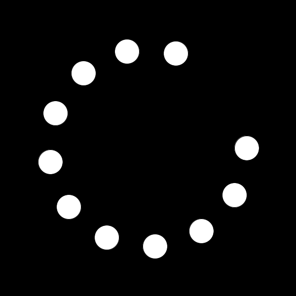
ここまで勉強したことだけでも，様々な表現ができそうですね．是非試してみてください．
二重for文

各行に対して，for文で円を連ねています．
size(500,500);
for(int x=0;x<=500;x+=100)ellipse(x,000,100,100);
for(int x=0;x<=500;x+=100)ellipse(x,100,100,100);
for(int x=0;x<=500;x+=100)ellipse(x,200,100,100);
for(int x=0;x<=500;x+=100)ellipse(x,300,100,100);
for(int x=0;x<=500;x+=100)ellipse(x,400,100,100);
for(int x=0;x<=500;x+=100)ellipse(x,500,100,100);
上のfor文は
size(500,500);
for(int y=0;y<=500;y+=100){
for(int x=0;x<=500;x+=100){
ellipse(x,y,100,100);
}
}
こうまとめられますね．
演習6-3
次の画像のようなマス目を書いてみましょう．

また，次の演習問題のようなこともできます．
演習6-4
次の画像のように階段状に円を描くにはどうすればよいでしょうか． 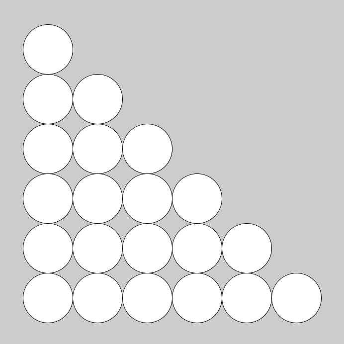
解答
解答
一例です．
演習6-3:
size(500,500);
for(int x=0;x<500;x+=50){
for(int y=0;y<500;y+=50){
rect(x,y,49,49);
}
}
line関数でも描くことができます．
演習6-4:
size(700,700);
for(int y=100;y<=600;y+=100){
for(int x=100;x<=y;x+=100){
ellipse(x,y,100,100);
}
}
Chapter 7:関数を作る
前提知識
関数とは
実は今まで使ってきたrect()やfill()，print()などは関数と呼ばれるものです．
例えば，
rect(x,y,a,b)で，座標(x,y)を左上の頂点として，横a縦bの長さである長方形が描かれます．print(a)では，変数aの内容が表示されます．background(r,g,b)では，背景色(r,g,b)で画面がクリアされます．
このように，関数は0個以上の入力(rectの例だとx,y,a,b)に対して何かを行うものです．
そして，この関数は自分で作ることができます．
引数
rect(x,y,a,b);について，x,y,a,bをそれぞれ引数(ひきすう)と呼びます．
また，引数それぞれには型が決まっていてrectの場合はfloat型です
関数を作る
関数を次のようにして定義できます．
void 関数名(型 仮引数名，型 仮引数名，......){
//
}
例です．
void setup(){
size(600,600);
}
void draw(){
face(100,100);
face(300,100);
}
void face(int x,int y){//座標(x,y)に顔を描く
fill(255,255,255);
ellipse(x,y,200,200);
fill(0,0,0);
ellipse(x-50,y-20,50,50);
ellipse(x+50,y-20,50,50);
line(x-50,y+50,x+50,y+50);
}
この例ではface(x,y)という関数を作っています．
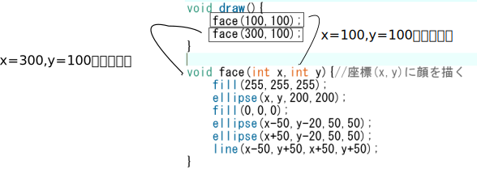
引数は個数はいくつでもよいです．
int x=0,y=0;
void setup(){
size(600,600);
}
void draw(){
clearScreen();
face(x,y);
x=x+4;y=y+3;
if(x>700)x=-100;
if(y>700)y=-100;
}
void clearScreen(){//引数が0個の関数
fill(255,255,255);
rect(0,0,600,600);
}
void face(int x,int y){//座標(x,y)に顔を描く
fill(255,255,255);
ellipse(x,y,200,200);
fill(0,0,0);
ellipse(x-50,y-20,50,50);
ellipse(x+50,y-20,50,50);
line(x-50,y+50,x+50,y+50);
}
clearScreen()という関数を作りました．引数が0個であり一見何の意味も成してないように見えますが，
fill(255,255,255);
rect(0,0,600,600);
が
clearScreen();
で，画面を真っ白にするという表現になったことで，何をしているかがわかりやすくなっています． このように，関数の定義による一連の動作の抽象化はコードの可読性が増し，汎用性も高くなります．
戻り値のある関数
戻り値がある関数は次のように書けます．
戻り値の型 関数名(型 仮引数名，型 仮引数名，......){
return 戻り値;
}
使い方の例です．
/*(x1,y1)と(x2,y2)のユークリッド距離を求める*/
float distance(float x1,float y1,float x2,float y2){
float dif_x=x1-x2;
float dif_y=y1-y2;
return sqrt(dif_x*dif_x+dif_y*dif_y);
}
void setup(){
float a=distance(0,0,1.4,1.4);
println(a);
}
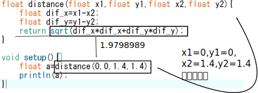
演習7-1
processingには，
background()関数が用意されていて，色(r,g,b)で画面がクリアされる．background()関数と同じ挙動をするmyBackground()関数を作成せよ1．
ここでは，background()関数がProcessingに用意されていなかったとする．つまり，myBackground()関数内にbackground()を置く，ということではなく，rect()関数などで画面を塗りつぶす方法を使用する．
演習7-2
doubleCircle(x,y,r)と実行したとき，中心の座標が(x,y)で，直径がrとr/2の円による二重丸が描画される関数を作成してみよ．
実行例
void setup(){
size(400,400);
}
void draw(){
doubleCircle(100,100,100);
doubleCircle(300,300,200);
}
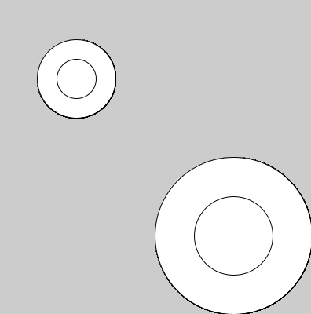
演習7-3
マウスポインタと円の衝突判定をする関数を作りたい．具体的には，次のプログラムを実行すると，円にマウスポインタが触れたら色が変更される，という動作をするように，
isInCircle関数を作成せよ．

float ex=300;//円のx座標
float ey=300;//円のy座標
float r=100;//円の半径
void setup(){
size(600,600);
}
void clearScreen(){//引数が0個の関数
fill(255,255,255);
rect(0,0,600,600);
}
/*
中心(cx,cy)半径rの円と点(ax,ay)の位置関係を返す
円の内部(境界線を含む)に点が入っている場合は1
円の外に点がある場合は0
が変える
*/
int isInCircle(float cx,float cy,float r,float ax,float ay){
/*何かを書く*/
}
void draw(){
clearScreen();//画面をまっさらに
if(isInCircle(ex,ey,r,mouseX,mouseY)==1){
fill(255,255,255);
ellipse(ex,ey,r*2,r*2);
}else{
fill(0,255,255);
ellipse(ex,ey,r*2,r*2);
}
ex+=5;//円を動かす
if(ex>=600+r){ //右端にいったら左端に戻す
ex=-r;
}
}
解答
解答
画面の大きさがわからないため，十分に大きな長方形にしておく．
void myBackground(int r,int g,int b){
fill(r,g,b);
rect(-10,-10,3000,3000);
}
実は，システム変数を使えば必要以上に大きな長方形を描く必要がない．
また，noStroke()関数で図形の枠線をなくすことができる．
void myBackground(int r,int g,int b){
fill(r,g,b);
noStroke();//枠線なし
rect(0,0,width,height);
}
演習 7-2:
void doubleCircle(float x,float y,float r){
ellipse(x,y,r,r);
ellipse(x,y,r/2,r/2);
}
演習 7-3: 円の内部に入っているということは，円の中心からの距離が，円の半径の長さ以下ということです．円の中心と，ある点の位置の距離は三平方の定理で求めることができます．
/*
中心(cx,cy)半径rの円と点(ax,ay)の位置関係を返す
円の内部(境界線を含む)に点が入っている場合は1
円の外に点がある場合は0
が変える
*/
int isInCircle(float cx,float cy,float r,float ax,float ay){
float dx=(cx-ax);
float dy=(cy-ay);
if (sqrt(dx*dx+dy*dy)>=r){
return 1;
}else{
return 0;
}
}
Chapter 8:配列
まとめて管理
シューティングゲームなどで，100個の弾の座標を管理したいときに次のように変数を定義していては大変です．
int x1= 4 ,y1=54;
int x2=15 ,y2= 4;
int x3=26 ,y3=34;
...
int x99=23,y99=2;
int x100=3,y100=4;
そこで配列です．宣言は次のようにできます．
int x[]=new int [100];
int y[]=new int [100];
型名 変数名[]=new 型名 [要素数];
new 型名[要素数]を忘れないようにしましょう．
int a[]=new int [4];
a[0]=3;
a[1]=1;
a[2]=4;
a[3]=1;
print(a[2]);
これを図で表すと，
変数名[インデックス]で配列にアクセスができます．インデックスは0から(要素数-1)までの整数で指定します．
要素数が4の場合，a[0],a[1],a[2],a[3]の4つの要素が使える，という意味になります．a[4]は使えません(エラーになります)． インデックスが0から始まることに注意です．
int a[]=new int [4];
a[0]=3;
a[1]=1;
a[2]=4;
a[3]=1;
for(int i=0;i<4;i++){
a[i]=a[i]+1;
println(a[i]);
}
配列は一度に処理をするのに非常に便利です(上の例だとすべてに1を加算している．) また，記録機能としても優秀です．
int a[]=new int [10];
int a[0]=1;
for(int i=1;i<10;i++)a[i]=a[i-1]*2;
for(int i=0;i<10;i++)println(a[i]);
演習8-1
フィボナッチ数列の第20項目はいくつか． ただし，フィボナッチ数列は，1,1,2,3,5,8,13,21,...のように初めの二項が1で，それ以降は前の二項の和となっている数列のことである．
解答
解答例:コードを書いてから答えをみよう！
演習8-1:6765
int a[]=new int [30];
a[1]=1;a[2]=1;
for(int i=3;i<=20;i++)a[i]=a[i-1]+a[i-2];
print(a[20]);
Chapter 9:クラスとメンバ
配列からクラスへ
配列は便利ですが，複数の情報を持つものが複数あると少しかさばります．具体的には座標，速度，加速度の3要素を持つ直線上の物体が10個あるときに，
int x[]=new int [10];//座標
int v[]=new int [10];//速度
int a[]=new int [10];//加速度
このようにコードをかくことができますが，少し冗長ですよね．というのも，x[i]とy[i]とa[i]は同じ物体についての情報であるのに別の配列に入っているという点で少し不便です．そこでそれらをまとめて扱う"クラス"というものを紹介します．
class object{
double x;
double v;
double a;
}
これでobjectというデータの型が使えるようになります．
object ball;
ball=new object();
上のコードで，ballという名前のobject型の変数(のようなもの)が宣言されます．普通のint型などの変数とは違って=new クラス名();があることに注意です
参照と代入は次のように行えます．
ball.x=2.2;
ball.v=-3.2;
ball.a=0.1;
print(ball.x);
配列にする場合，少し手順が複雑になります．
object ball[]=new object[100];
for(int i=0;i<100;i++)ball[i]=new object();
ball[0].x=2.2;
ball[0].v=-3.2;
ball[0].a=0.1;
Game 1:単発避けゲー
次のようなゲームを作ります．
マウスで水色の円を動かして，紫色の円から逃げるゲームです．

基本
まず，マウスを追従する自機(円)を描きます． 背景色や大きさは適当に設定してください．
void setup(){
size(600,600);
}
void draw(){
background(240,220,200);//背景
ellipse(mouseX,mouseY,40,40);//自機
}
このプログラムでもいいのですが，後で衝突判定などを行いたいときに，自機の現在地や大きさが欲しくなるかもしれません．そこで，次のように書き直します．
void setup(){
size(600,600);
}
void draw(){
background(240,220,200);//背景
int px=mouseX,py=mouseY,pr=20;
ellipse(px,py,pr*2,pr*2);//自機
}
次に敵(円)を描きます．敵は，動かすことが前提なので，座標や半径を変数として取っておきます．

int ex=300,ey=100,er=40;//敵の座標，半径
void setup(){
size(600,600);
gifset();
}
void draw(){
background(240,220,200);//背景
int px=mouseX,py=mouseY,pr=20;
fill(20,200,200);
ellipse(px,py,pr*2,pr*2);//自機
fill(200,20,200);
ellipse(ex,ey,er*2,er*2);//敵
gifdraw();
}
さて，この状態では自機が敵に衝突しても何も起こりません．当たり判定を付けましょう． 2つの円の座標と半径がそれぞれ与えられたときに，円同士が重なっているかどうかを判定できれば良いです．
2つの円が重なっているときは，次のことが成り立ちます．
2つの円の半径の和>2つの円の中心同士の距離
よって，これをif文で実装すれば良いです．
float distance = sqrt((px-ex)*(px-ex)+(py-ey)*(py-ey));//三平方の定理で，中心同士の距離を求める
if(distance > pr+er){
//当たった判定
}
別の実装方法も考えられます．
int dx = px - ex;
int dy = py - ey;
int sr = pr + er;
if( dx*dx + dy*dy < sr*sr ){
//当たった判定
}
肝心の，当たったときの処理ですが，とりあえずstop();関数を入れておきましょう．stop()関数はウィンドウの状態を維持したままdraw()関数の実行が止まります．
文字の描画
このままでは，敵に当たると急に動かなくなるので，ユーザーは困惑するでしょう．「GAMEOVER」の文字くらいは欲しいですね．
Processingには，文字を描画する関数が用意されています．
textAlign(LEFT,TOP);
textSize(128);
text("GAMEOVER", 00, 00);
text(S,x,y)は文字列Sを(x,y)を基準に描く関数です．
textSize()関数とtextAlign()関数はtext()関数で描かれる文字の大きさや基準点を指定しています．
詳しく知りたい人は調べてみてください．
文字の色はfill()で設定できます．
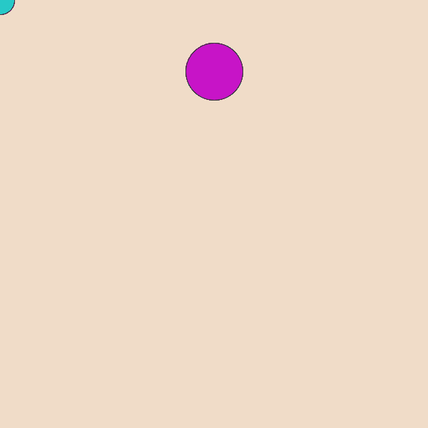
敵を動かす
敵を動かせば一応ゲームとして遊べるようになります．
敵の座標はex,eyの変数で管理しているので，これを変えてやれば良いです．
敵の動かし方ですが， プログラミング入門/動きを作ろう プログラミング入門/分岐処理 を参考にして作ってみてください．
最終的なプログラム(一例)
プログラム
int ex=300,ey=100,er=100;
int vx=20,vy=10;
void setup(){
size(600,600);
}
void draw(){
background(240,220,200);//背景
int px=mouseX,py=mouseY,pr=20;
fill(20,200,200);
ellipse(px,py,pr*2,pr*2);//自機
fill(200,20,200);
ellipse(ex,ey,er*2,er*2);//敵
int dx = px - ex;
int dy = py - ey;
int sr = pr + er;
if( dx*dx + dy*dy < sr*sr ){
textAlign(LEFT,TOP);
textSize(128);
fill(255,0,0);
text("GAMEOVER", 00, 00);
stop();
}
ex+=vx;
ey+=vy;
if(ex>=600||ex<0){
vx=-vx;
}
if(ey>=600||ey<0){
vy=-vy;
}
}
さらにゲームらしく
このゲームに付け加える要素として次のようなものが考えられます．
- 避けた続けた時間をスコアとしてゲームオーバー時に表示させる
- 敵のスピードがだんだん早くなるようにする
- ゲームオーバーになったあとにリトライできるようにする
Game 2:鳥のゲーム
今回は，キーボードを押すとキャラクターが上昇するゲームを作成します．
工事中
発展:平方根
平方根はsqrt関数を使えば得られます．
float a=sqrt(2);
print(a);
そもそも，どのようにしてsqrt関数内で平方根を計算しているのでしょうか．もしsqrt関数が使えなかったらどうすればよいでしょうか．
例えば，次のように実装してみたとしましょう．
float fun(float a){
float ans=0;
while(true){
ans+=0.001f;
if(ans*ans==a)break;
}
return ans;
}
このプログラムには問題点があり，
- aが大きな値(例えば40000，試してみてください)だと時間がかかる
- 平方根はだいたい無理数なのでans*ans==aになることはほとんどない→永久にwhile文を抜けださない
といった点で困ります．後者は
ans*ansとaの差が十分に小さかったら，という処理で回避できるかもしれませんが前者はどうにもなりません． 実際のsqrt関数は，ある程度の桁数の精度を得ることができるので，どうやらこの方法ではないようです．
二分探索
float fun(float a){
float l=0;
float r=a;
while(true){
float m=(l+r)/2;
if(m*m>a)r=m;
else l=m;
float d=m*m-a;
if(d<0)d=-d;
if(d<0.00000001f)break;
}
return (l+r)/2;
}
例えば，100の平方根を求めるときに50の
再帰でフラクタル図形
フラクタル図形(構造)とは，その図形自身の一部が自身の相似な図形となっている図形や構造のことです．
void rerect(int x,int y,int side,int cnt){
if(cnt<=0)return;
rect(x,y,side,side);
side/=3;
for(int dx=0;dx<=1;dx++){
for(int dy=0;dy<=1;dy++){
rerect(x+dx*side,y+dy*side,side,cnt-1);
}
}
}
void setup(){
size(800,800);
frameRate(10);
}
void draw(){
background(0,0,0);
stroke(255);
noFill();
rerect(100,100,600,7);
}
int cnt=0;
float t=0;
void setup(){
size(1100,800);
frameRate(30);
}
void tree(float x,float y,float s,float r,int c){
if(c<=0)return;
for(int i=-2;i<=2;i+=2){
float nr=i*0.15+r;
float dx=cos(nr)*s;
float dy=sin(nr)*s;
line(x,y,x+dx,y+dy);
tree(x+dx,y+dy,s*0.9,nr,c-1);
}
}
void draw(){
background(0);
strokeWeight(2);
stroke(255);
tree(width/2,height,150,-PI/2,6);
}
三角関数
コンピュータ上での色の表現
色の指定
Processingではfill命令やstroke命令で描画する色をしてすることができます．(r,g,b)はred,green,blueの光の三原色の混じり具合を表しています．それぞれ0~255の整数値で設定できます．
絵具とは違い，光であるので色が混じると白色に近くなっていきます．次の表に示します．
| (r,g,b) | 色 |
|---|---|
(000,000,000) | 黒 |
(255,255,255) | 白 |
(255,000,000) | 赤 |
(000,255,000) | 緑 |
(000,000,255) | 青 |
(255,255,000) | 黄 |
(255,000,255) | 紫 |
(000,255,255) | 水 |
デザインの話になりますが，上の表にあるような極端に振った(255とか0)値を含んだ色を使うと，主張が激しく感じます(個人差はありますが)．意図的にそうしたい場合を除いて，実際に色を使う場合は，そのような色を避けて優しい色遣いをするとよいです．
また，上の表は覚える必要はなく，Processingのツールタブから色選択...を選択すると下の画像のようなウィンドウが出てきます．

これを使えば使いたい色のrgb値がわかります．
変数の詳しい話
整数型，浮動小数点型
chapter2ではintで整数をいれる変数を作れることがわかりました．これによって作られた変数をint型変数，といいます．あるいは，整数が入るので単に整数型とも言います．
float a=1.5;
float b=1.5;
print(a*b);//2.25
上のサンプルのように，intの代わりにfloatを使うと小数を代入することができます．
int a=5;
int b=3;
println(a/b);//1
println(float(a)/b);//1.66666...
整数型同士の割り算は小数点以下を切り捨てられてしまうので，小数の値を得たい場合は，割り算をする前にfloat(a)でfloat型に変換し，切り捨てを行わないようにします．
さらに精度を良くして数を扱う場合は整数ならlong型，小数ならdouble型を使います．
| 型名 | 代入できる値 |
|---|---|
| int | -2147483648から2147483647の整数 |
| long | -9223372036854775808から9223372036854775807の整数 |
| float | 小数 |
| double | float型よりも精度のよい小数 |
long型に値を代入する場合，末尾にLをつけないとエラーになることがあります．
long a=9223372036854775807L;//Lをつける
変数のスコープ
例えば，apple_costをvoid draw()中で使いたいときに次のようなコードを書いたとします．これはエラーになります．
なぜでしょうか．
void setup(){
int apple_cost=80;
size(600,600);
}
void draw(){
printf(apple_cost);
}
原因は変数のスコープです．スコープは範囲という意味です．実は，void setup()内で宣言されたapple_costという変数は，void setup()内でしか使用することができません．
あるブロック内で宣言された変数はそのブロック内でしか使用できません．
ブロックとは，中括弧{と}で囲まれた区間のことです．
{と}はfor文やif文などでも使われているので，これもブロックになります．
void setup(){
size(600,600);
}
void draw(){
for(int i=0;i<10;++i){
int foo=31;//このfor文内でしか使用できない
}
int hoge=3;
if(hoge==3){
int piyo;//このif文内でしか使用できない
}
}
ブロックの垣根を超えて変数を使用する場合は，ブロックの外で変数の宣言をします． 特に，どのブロックにも属していない変数のことをグローバル変数といいます．
int apple_cost=80;//グローバル変数
void setup(){
size(600,600);
}
void draw(){
printf(apple_cost);
}
また，同じブロックに属していなければ，区別が可能であるので変数の名前が被っていても問題ありません．
int sum(int v1,int v2){
int ans=v1+v2;
return ans;
}
int mul(int v1,int v2){
int ans=v1*v2;
return ans;
}
演算子
省略
int apple=0;
apple=apple+2;
apple=apple-3;
apple=apple*5;
apple=apple/7;
apple=apple%11;
上の式のように自分自身に対する計算は，短く書くことができます．
int apple=0;
apple+=2;
apple-=3;
apple*=5;
apple/=7;
apple%=11;
また，1を足すまたは引く場合はさらに短く書くことができます．
int apple=0;
apple++;//apple=apple+1と同じ
apple--;//apple=apple-1と同じ
++を先に書くこともできます．これらは挙動が違います．
int a=0;
print(a++);
print(a);
a=0;
print(++a);
print(a);
bit演算子
bitにかかわる演算子です．
| すること | 演算子 | 例 | aの値 |
|---|---|---|---|
| AND | & | a=1&3 | 1 |
| OR | ` | ` | `a=1 |
| XOR | ^ | a=1^3 | 2 |
| 左にビットシフト | << | a=1<<3 | 8 |
| 右にビットシフト | >> | a=4>>1 | 2 |
例えば，変数aの2ビット目(一番右を0ビット目とする)が1立っているかどうか(1であるか)を確かめるには，
if((a&(1<<2))!=0)print("aの2ビット目は立っています");
で調べることができます．
応用すると，部分集合が全列挙できます．
int a[]={0,1,2,3,4};
int size=5;
for(int i=0;i<(1<<size);i++){
for(int k=0;k<size;k++){
if((i&(1<<k))!=0){
print(a[k]);
}
}
print("\n");
}
Scratchの命令に置き換えると？
| ブロック | Processing |
|---|---|
if(a>50){} | |
for(int i=0;i<10;i++){} | |
 | 50<a && a<100 |
 | if(a==50){}else{} |
 | a=0;while(!a==50){a=a+1;} |
 | void greeting(string name){print(name);} |
Processingの次は？
サンプルプログラム
全てShibaken28によって書かれました．一部コードの可読性が著しく低いものがあります．
時計

ソースコード
void setup(){
size(600,600);
}
void draw(){
fill(0);
rect(0,0,width,height);
int hy=height/24;
int my=height/60;
int sy=height/60;
stroke(170);
fill(255);//白色
for(int i=1;i<=hour();i++)rect(0,600-hy*i,200,hy);
for(int i=1;i<=minute();i++)rect(200,600-my*i,200,my);
for(int i=1;i<=second();i++)rect(400,600-sy*i,200,sy);
}
歪み

ソースコード
int r=40;
void setup(){fullScreen();}
void draw(){
clear();noStroke();
float X=mouseX,Y=mouseY;
for(int x=0;x<=width;x+=r){
for(int y=0;y<=height;y+=r){
float tx=x,ty=y,d=PI/2;
float dx=X-x,dy=Y-y;
float l=sqrt(dx*dx+dy*dy);
if(X-x!=0)d=atan(dy/dx);
else if(Y>y)d=-d;
if(X-x>0)d=d-PI;
tx+=cos(d)*r*log(l);ty+=sin(d)*r*log(l);
circle(tx,ty,r);
}
}
}
波

ソースコード
int w=100;
float wave[]=new float[w];
float y=400;
float t=0;
float x;
void setup(){
fullScreen();
x=displayWidth;
}
void draw(){
float ww=x/w;
background(0);
strokeWeight(ww-1);
stroke(0,255,255);
for(int i=0;i<w;i++){
wave[i]=0;
float T=120,la=630;
float A=25;
wave[i]+=A*sin(2*PI*(t/T-i*ww/la));
T=70;la=450;
A=30;
wave[i]+=A*sin(2*PI*(t/T-i*ww/la));
T=-200;la=1050;
A=20;
wave[i]+=A*sin(2*PI*(t/T-i*ww/la));
line(i*ww,wave[i]+y,i*ww,displayHeight);
}
t++;
}
波動

ソースコード
int r=30;
int X, Y, R;
void setup() {
fullScreen();
}
void draw() {
background(0);
fill(255);
noStroke();
R+=10;
if (mousePressed) {
X=mouseX;
Y=mouseY;
R=0;
}
for (int x=0; x<2000; x+=r) {
for (int y=x%7; y<1500; y+=r) {
float d=dist(x, y, X, Y);
circle(x, y, r-(R<d+500&&d<R?(-R+d)/10+50:0));
}
}
}
弾幕避け

ソースコード
class Point{
float x;
float y;
float d;
float s;
float far;
float r;
int t_f=1;
color col;
Point(float p,float q,float t,float v,float h,color c)
{
x=p;
y=q;
d=t;
s=v;
r=h;
col=c;
}
void go(float p,float q,float t,float v,float h)
{
x=p;
y=q;
d=t;
s=v;
r=h;
}
void move()
{
if(s!=0){
x=x+cos(radians(d))*s;
y=y+sin(radians(d))*s;
}
}
void hit()
{
if(time>10)
{
far=sqrt((mouseX-x)*(mouseX-x)+(mouseY-y)*(mouseY-y));
if(far<5){t_f=0;}else{t_f=1;}
}
}
void away()
{
if(x>width){d=180-d;}
else if(x<0){d=180-d;}
else if(y>height){d=-d;}
else if(y<0){d=-d;}
}
}
Point[] zahyo=new Point[512];
int use_n=0;
int rad=0;
int level=1;
float time=0;
float speed=3;
int hankei=10;
int ran=0;
void setup()
{
size(512,512);
background(200);
noStroke();
for(int i=0; i<zahyo.length ;i++)
{
zahyo[i]=new Point(-64,-64,0,0,-1,color(i,random(255),255));
}
run();
}
void draw()
{
fill(255,255,255);
rect(0,0,width,height);
fill(0,0,0);
for(int i=0; i<zahyo.length ;i++)
{
fill(zahyo[i].col);
zahyo[i].move();
zahyo[i].away();
ellipse(zahyo[i].x,zahyo[i].y,zahyo[i].r,zahyo[i].r);
}
fill(0,255,0);
ellipse(width/2,height/2,40,40);
fill(255,0,0);
ellipse(mouseX,mouseY,10,10);
for(int i=0; i<zahyo.length ;i++)
{
zahyo[i].hit();
if(zahyo[i].t_f==0)
{
noLoop();
textSize(64);
text("GAME OVER", 0, 300);
}
}
time += 1;
textSize(32);
text("balls:"+level, 00, 32);
if (time/(20-level/15)==int(time/(20-level/15)))
{
level+=1;
run();
}
}
void incuse()
{
zahyo[use_n].go(width/2,height/2,rad,speed,hankei);
use_n += 1;
if (use_n>=zahyo.length){use_n=0;}
}
void run()
{
speed=1.5;
hankei=10+int(random(0,10));
rad+=7;
zahyo[use_n].go(width/2,height/2,rad,speed,hankei);
incuse();
}
カージオイド

ソースコード
float t=0,x,y;
void setup(){fullScreen();x=displayWidth/2;y=displayHeight/2;}
void draw(){
clear();stroke(255);strokeWeight(3);
for(float i=0;i<6.28;i+=.0523){
float r=200*(1+cos(i)*sin(t)*2),s=200*(1+cos(i+.0523)*sin(t)*2);
for(float j=0;j<6.28;j+=0.419)line(x+r*cos(i+j),y+r*sin(i+j),x+s*cos(i+.0523+j),y+s*sin(i+.0523+j));
}t+=.03;
}
フラクタル
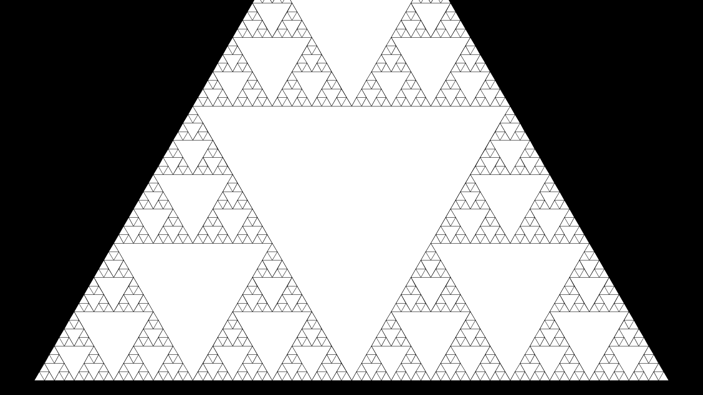
ソースコード
float t=1;
int cnt=0;
void setup(){
fullScreen();
}
void d(float cx,float cy,float s,int c,float rd){
cnt++;
int r=255,g=255,b=255;
fill(r,g,b);
float x1=cx+cos(0+rd)*s,y1=cy+sin(0+rd)*s;
float x2=cx+cos(PI*2/3+rd)*s,y2=cy+sin(PI*2/3+rd)*s;
float x3=cx+cos(PI*4/3+rd)*s,y3=cy+sin(PI*4/3+rd)*s;
triangle(x1,y1,x2,y2,x3,y3);
s/=2;
x1=cx+cos(0+rd)*s;y1=cy+sin(0+rd)*s;
x2=cx+cos(PI*2/3+rd)*s;y2=cy+sin(PI*2/3+rd)*s;
x3=cx+cos(PI*4/3+rd)*s;y3=cy+sin(PI*4/3+rd)*s;
if(c>0){
//d(cx,cy,s,c-1,rd);
d(x1,y1,s,c-1,rd);
d(x2,y2,s,c-1,rd);
d(x3,y3,s,c-1,rd);
}
}
void draw(){
cnt=0;
textSize(100);
background(0);
fill(255);
d(displayWidth/2,displayHeight/2,1000,6,PI/6);
t=PI/3;
}
ほかの作品
OpenProcessing
OpenProcessingというサイトにはProcessingを使用した作品が投稿されています
つぶやきProcessing
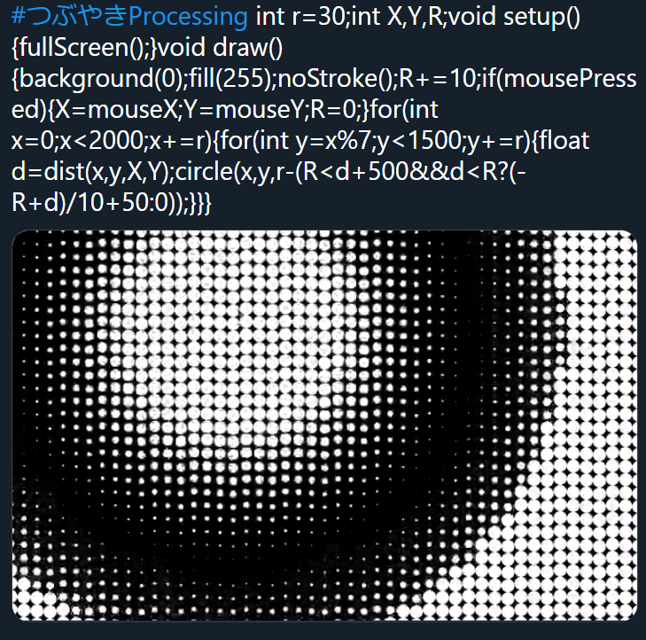
一つのツイートに収まるソースコードで作品を作る，#つぶやきProcessing というハッシュタグが存在します．ハッシュタグを検索すれば作品がたくさん出てきます．また，ハッシュタグさえ付ければ誰でも投稿が可能なので挑戦してみるのも良いでしょう．
次のプログラムはつぶやきProcessingの例です．
float t,e,i,j;void setup(){size(900,600);}void draw(){t+=.017;e+=.1;clear();noStroke();for(i=0;i<32;i++)for(j=1;j<5;j++){float d=1-j/25,c=i*0.196+t*(2+j/3);float x=cos(c)*100*j,y=sin(c)*100*j;ellipse(450+x*cos(e/j)+y*sin(d)*sin(e/j),300+y*cos(d),10*j,10*j);}}
このような数式などを使った幾何学的な作品はジェネラティブアート(Generative Art)と呼びます．Processingはジェネラティブアートをするのに手軽な言語です．
Git / GitHub 講座
ここではGitとGitHubの使い方について解説します。 Gitはバージョン管理システムと呼ばれるもので、あなたが書いたプログラムのコード(ソースコード)を円滑に管理することができます。 ソースコード以外にもテキストファイルなら何でも管理することができ、小説やレポートなどを管理することもできます。 現在、IT業界のデファクト・スタンダードとなっておりITエンジニア･ITエンジニアになりたい人全員が使用しています。 さらに複数人での共同開発に向いており、会社･部活･サークルなどで共同開発するときにほぼ必ず使われます。
バージョン管理の利点
レポートやソースコードを管理するとき、｢もしかしたら前のものに戻したいからバックアップを取っておこう｣みたいに思ったことは無いでしょうか？ その場合、ファイル名に日付を付けたり番号をつけたりすると思いますが、大抵の場合こうなります。
- 提出レポート(1).docx
- 提出レポート_001.docx
- 提出レポート_2021-04-22.docx
- 提出レポート_最新.docx
- 提出レポート_最終版.docx
- 提出レポート_最終版_02.docx
- 提出レポート_最終版_提出済み.docx
こうなってしまうとどのファイルが最新なのか、どのファイルが最後から2番目のファイルなのかが分かりません。 Gitはこのような面倒なバージョン管理をすべて行ってくれます。一般的にGitの利点は以下のとおりです。
- 各変更をバージョンとして記録し、それをいつでも表示したりバージョンを戻したりできる
- いつ誰がどこを変更したかが表示できる(差分管理･表示)
- なんのために変更したのか理由を記入できる
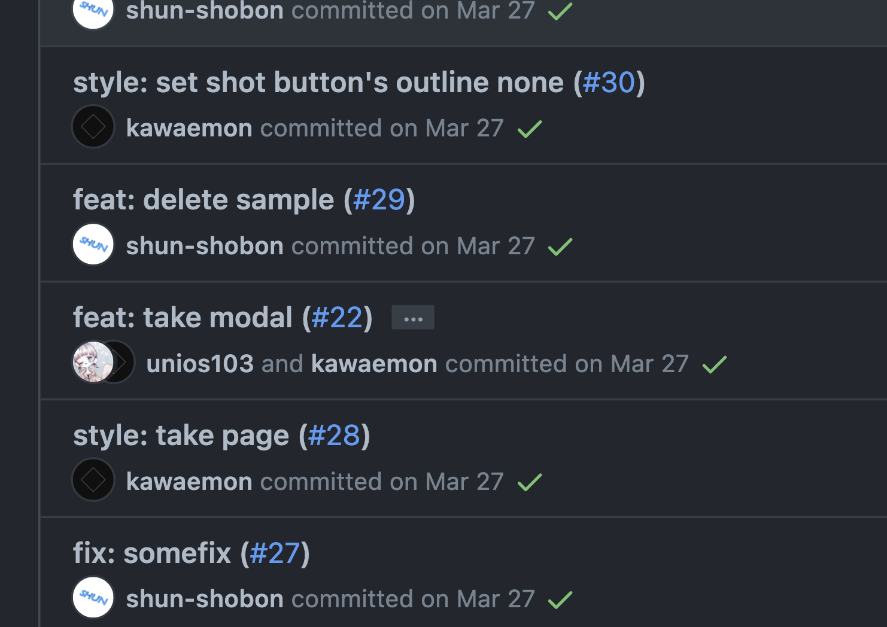

他にもGitは 複数人での共同管理に対応しており、 複数人で同時に1つのファイルを編集したとしてもきちんと統合することができます。
GitHubとは
Gitがバージョン管理システムならばGitHubは何でしょうか？ 先程、Gitでは複数人での共同管理に対応していると言いましたが、共同管理するにはGitで管理しているデータをサーバー上にアップロードし、共有する必要があります。 サーバーというのは個人が簡単に運用ができるものではなく、 サーバーを借りたり契約する必要があり、運用にコスト(お金)がかかってしまいます。 GitHubはそういった悩みを解消するサービスです。GitHubは巨大なGitサーバーのようなもので、 基本的に無料で サービスを利用できます。 他にもGitHub独自の機能を有しており、共同開発するときにはほぼ必須のサービスとなっています。GitHubに類似したサービスとして、GitLabやBitbucketなどがあります。
Git / GitHub を始める準備
Gitのインストール
Windows･WSL2共通
こちらのリンクからインストーラをダウンロードし、インストーラを実行して画面の指示に従ってください。 なお、途中で使用するテキストエディタを選択する場面がありますが、 デフォルトではVimが選択されているため 、別のエディタを選択してください。 (VimはCLI上で動作するテキストエディタですが、扱いが非常に難しいため初心者にはおすすめしません。)おすすめはVSCode(入っていれば)です。
Ubuntu(WSL2)の場合
以下のコマンド実行でインストールできます。 (余談ですがLinuxは1コマンドで何でもインストールすることができるのが強みです。)
sudo apt update
sudo apt install git
GitではGitHubなどのリモートGitサーバーの認証情報を扱う場面がありますが、WSL上のGitではそれを保持することができないため、 WindowsにインストールしたGit for Windowsを用いて認証情報を保存します。以下のコマンドで設定してください。 (なお、以下の設定はデフォルトのパスにGit for Windowsをインストールした場合のコマンドです。変更した場合は適宜読み替えてください。)
git config --global credential.helper "/mnt/c/Program\ Files/Git/mingw64/libexec/git-core/git-credential-manager.exe"
macOSの場合
App StoreからXCodeをイントールすれば勝手についてきます。 しかし、ついてくるものはバージョンが古いためHomebrewからインストールしましょう。
brew update
brew install git
GitHubのアカウント登録
ここからGitHubのアカウント登録を行ってください。 (GitHubは利用規約で複数アカウントの所持が禁止されているため解説できません。申し訳ありません。)
名前とメールアドレスの設定
Gitで使用する名前とメールアドレスを設定します。 名前はお好きに決めて構いませんが、メールアドレスはGitHubに登録したものを使用する必要があります。 この名前とメールアドレスは全世界に公開されます(GitHubにデータを上げる場合)。 もしも自分のメールアドレスが晒されるのが嫌だと言う場合は、GitHubの設定のEmailsタブにあるメールアドレスを使用してください。

ターミナル上で以下のコマンド実行します。
git config --global user.name <名前>
git config --global user.email <メールアドレス>
Gitの概要
Gitの仕組み
Gitはバージョン管理システムだと言いましたが、Gitどのようにバージョンを管理しているのでしょうか。 Gitは スナップショット(Snapshot) を取ることによってバージョンを管理しています。
Gitにバージョンを記録するとき、その時点での全てのファイルの状態のスナップショットを撮ります。 そしてバージョンとしてそのスナップショットへの参照を記録します。 もしすでにスナップショットが撮られていて、変更がないファイルの場合はスナップショットは撮らずに過去のスナップショットを使いまします。

つまりGitはバージョンごとのファイルのデータを全て記録しています。 そのため過去のバージョンのファイルを表示する時、Gitは過去のバージョンに記録されているスナップショットの参照からファイルデータを表示しているだけなのです。
Gitは永続的
Gitは基本的にデータを追加していくだけです。 データの削除は行われず、一度記録されたデータは永久的に残ります。1 これは試行錯誤を安全に行えるため、Git(バージョン管理システム)の利点となります。 しかし、何かしらの機密情報(パスワードやトークンなど)を間違えて記録してしまうと削除が非常に難しくなります。 Git/GitHubを利用する際はその点に留意して利用してください。
リポジトリ
Gitのバージョン管理は リポジトリ(Repository) という単位で行われます。 ファイルの変更履歴などの情報は全てリポジトリに記録されます。
リポジトリの実態は.gitというディレクトリです。
Gitの管理下(=リポジトリの管理下)にあるディレクトリにはこの.gitというディレクトリが存在します。

この.gitにはリポジトリのあらゆるデータが格納されているため、これを削除してしまうとリポジトリも消えてしまいます。
注意しましょう。
ローカルリポジトリとリモートリポジトリ
Gitは複数人での共同管理に対応しています。 この共同管理は1つのデータを複数のリポジトリで共有することで実現しています。 リポジトリは ローカルリポジトリ と リモートリポジトリ の2種類に分類できます。
ローカルリポジトリは自分のPC上に置いておくリポジトリで、共同管理者一人ひとりがPC上に配置します。 対してリモートリポジトリはサーバ等の複数人でアクセスできる環境に置かれ、このリモートリポジトリを介して共同管理者はリポジトリのデータをやり取りします。
また、ローカルリポジトリのデータをリモートリポジトリにアップロードすることを プッシュ(Push) 、リモートリポジトリのデータをローカルリポジトリにダウンロードすることを フェッチ(Fetch) と言います。 詳しくは後述しますが、覚えておきましょう。
コミット
ファイルデータのスナップショットを撮って、バージョンを記録することを コミット(Commit) と言います。 この表現は非常に多く出てくるので覚えておきましょう。
Gitにおける3つの場所
リポジトリには3つの場所が存在します。
それは 作業ディレクトリ(Working Directory) 、 ステージングエリア(Staging Area) 、 .gitディレクトリ(リポジトリ) です。
作業ディレクトリ は現在ディスク上に存在するファイルのことで、実際に作業しているディレクトリを指します。
ステージングエリア はコミットの準備をするための場所で、ここに置いたファイルがコミットに含まれます。
.gitディレクトリ はコミットしたバージョンが含まれます。
特殊な管理コマンドを使用したり、ガベージコレクションといった操作を行うと、データが削除されることがあります。
初めてのコミット
早速Gitでコミットをしてみましょう。
リポジトリを作る
とりあえず作業用に適当なリポジトリを作ってみます。 Windowsを使用している場合はGit Bashを、それ以外を使用している場合は普段使用しているターミナル1を開きましょう。 表示されるのは俗に言う「黒い画面」です。もしかしたらこの黒い画面に恐怖心がある方もいるかも知れませんが、頑張ってください。
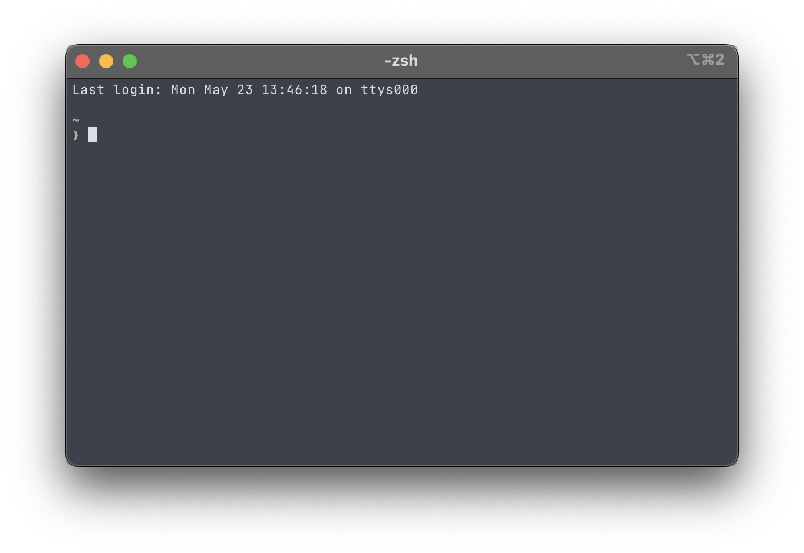
上記のスクリーンショットは若干違う表示の場合もあると思いますが、基本的に>や$みたいな表示があり、
そこにテキスト(コマンド)を入力することができるようになっているはずです。
コマンドを入力する準備ができたら、リポジトリとして作業するためのディレクトリを作ります。
名前は何でも良いですが、ここではtestとします。
mkdir test
ディレクトリを作ったらカレントディレクトリをそこに移動します。
cd test
移動したらリポジトリを作ってみましょう。
Gitのコマンドは全てgit <サブコマンド名>というような形式で、
リポジトリを作る場合はgit initというコマンドを使用します。
initは Initialize の略で、初期化といった意味があります。
ITの世界では頻繁に使用される略語のため、覚えておくと良いです。
git init
リポジトリの作成に成功すると、
Initialized empty Git repository in <カレントディレクトリ>/.git/
というメッセージが出力されるはずです。
前回のリポジトリの説明で書いたとおり、リポジトリの実体は.gitというディレクトリです。
git initはこの.gitディレクトリを作成するコマンドです。
そのため、ディレクトリにあるファイル・ディレクトリを表示させるlsコマンドを使ってカレントディレクトリの中身を表示すると、.gitが新たに作成されています。

新しくファイルを作ってみる
リポジトリが作成できたら、そこに何かファイルを作ってみましょう。
エクスプローラーやFinderなどのファイルマネージャーから「新規作成」で作ってもいいですし、
VSCodeなどのテキストエディタで作ってもいいですし、
touchコマンドとリダイレクトを駆使して作っても構いません。とにかく何かしらファイルを作ります。
ただしできる限りテキストファイルにしてください。Wordファイルや画像ファイルはGitで管理するにはあまり都合がよくありません。2

これで作業ディレクトリにファイルが新しく追加されました。
Gitは作業ディレクトリ上での変更をきちんと認識しています。
現在のリポジトリの状態を見るにはgit statusというコマンドを使用します。
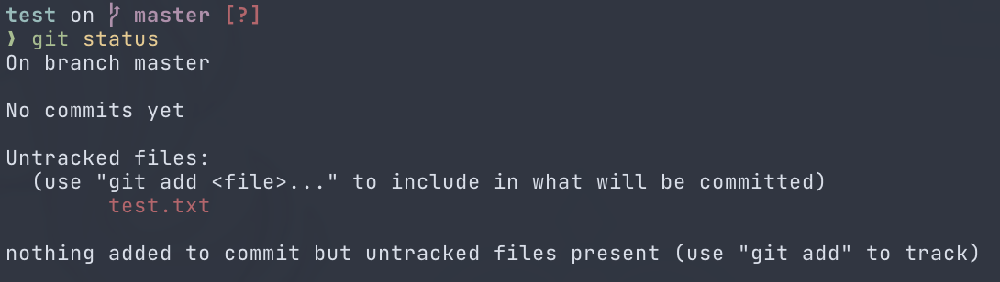
一段落目は今どのブランチ(branch)に居るかの説明です。ブランチの解説は後でしますが、おそらくmasterかmainになっていると思います。
二段落目はこのリポジトリにはまだコミットがされていないことを表しています。
三段落目が重要です。ここでは作業ディレクトリやステージングエリアにあるファイルの状態を表示しています。
今はUntrackedなファイルとしてtest.txtが表示されています。
UntrackedなファイルはまだGitで管理されていないファイルのことです。
test.txtは作成したばかりで、コミット等も一度も行っていないためUntrackedなファイルとなっています。
四段落目ではコミットすべきファイルはないが(ステージングエリアにまだファイルを追加していないため)、Untrackedなファイルが存在していることを表しています。
ステージングエリアにファイルを追加する
リポジトリへコミットするには始めにステージングエリアに変更を追加する必要があります。 ステージングエリアはコミットをするための準備をする場所です。 始めは面倒だと感じるかもしれませんが、作業ディレクトリで加えた複数の変更からコミットした変更を取捨選択するには非常に便利です。
ステージングエリアへの追加はgit addというコマンドを使用します。
追加という意味でコマンド名がaddなのでとても分かりやすいですね。
先程作成したtest.txtを追加するには以下のコマンドを実行します。
git add test.txt
追加したいファイルが複数ある場合はgit addを複数回実行するか、git addの後にスペース区切りでファイルを複数指定します。
正しくステージングエリアに変更が追加されたかどうかを見るには例のごとくgit statusを使用します。

先程赤色でUntrackedと表示されていたtest.txtが新しいファイルとして緑色で表示されています。
緑色の表示はステージングエリアにある変更を表しています。
ここで重要なのが、git addは コマンド実行時の変更をステージングエリアに追加している ということです。
ステージングエリアへ追加した後に作業ディレクトリに再び変更を加えてもステージングエリアにその変更が伝わることはありません。
再びステージングエリアへ追加する場合はgit addをもう一度実行してください。
コミットする
いよいよコミットをしてみましょう。
コミットをするには名前の通りgit commitというコマンドを使用します。
コミットするときには コミットメッセージ というものを必ず含める必要があります。3
コミットメッセージにはそのコミットでは何をしたかを端的に記すと良いです。
以下のコマンドでコミットメッセージを指定してコミットすることが出来ます。
git commit -m '<コミットメッセージ>'
お疲れさまです、初めてのコミットが出来ました！！
きちんとコミットが出来たかを見るにはgit logコマンドを使用します。
このコマンドはこれまでのコミット履歴を見ることが出来ます。
履歴にはコミットメッセージ、コミットした日時、コミットした人、コミットハッシュがデフォルトで表示されます。
コミットハッシュはそのコミットを指し示すIDのようなもので、コミットごとに異なり、基本的にリポジトリ内で重複することはありません。

開発の流れ
ここでGitを使った開発の流れをおさらいしてみましょう。
git initでリポジトリを作る- リポジトリ上でプログラミングする(ファイルを作る)
- きりの良いところで
git addで変更をステージングエリアに追加する git commitでコミットする- 2に戻る
WSL2ならWindows Terminalなど、macOSならターミナルやiTerm2など、Linuxならそれぞれの端末のことです。
管理できないわけではありませんが、差分表示などの機能を利用できなくなります。
実は必須ではないのですが、基本的にはコミットメッセージがないとエラーになります。
初めてのプッシュ
前回はGitでのリポジトリの作成とコミットまでを行いました。 ここまででローカル(自分のPC)上でGitを運用することができるようになりました。 しかし、Gitはインターネット等を介したリモートリポジトリを使うことによって真価を発揮します。 ローカル上で作業した結果をリモートにアップロードすることによって他の人に自分の成果を簡単に共有したり、ローカル上のデータが飛んだときのバックアップにすることもできます。 ここではGitHubを用いてリポジトリを作り、プッシュするところまでを行います。
リポジトリを作る
ローカルで最初に作業したのと同じようにリモートでも最初にリポジトリを作成するところから始めます。
このリンクかgithub.comにアクセスし、右上の「+」ボタンから「New repository」を選択して新規リポジトリ作成画面を開きましょう。
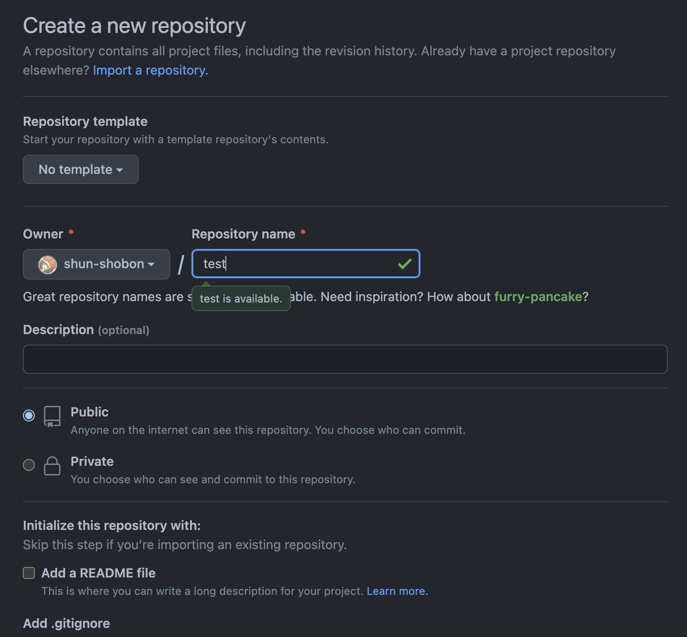
入力欄がたくさんありますが、必要なのは「Repository name」のみです。
ここでリポジトリ名を決めましょう。
名前は好きなように設定可能ですが、
リポジトリ名がそのままURLになるためむやみに変更したり、
あまり関係のない名前を付けるのはやめましょう。
なお、リポジトリ名として使えるのは半角英数字とハイフン(-)とアンダースコア(_)のみです。
リポジトリ名を決めたら後は特に変更せずに一番下の「Create repository」をクリックしてリポジトリを作成します。1

「Quick setup」の下にあるhttps://から始まるURLを確認してください。このURLは今作成したリポジトリへのURLです。https://から始まっていない場合はその左のHTTPS/SSHのボタンからHTTPSを選択してください。2
このURLは後で使用するので右のボタンからコピーしておきましょう。
リモートリポジトリの追加
GitHub上にリポジトリが作成できたら、次はローカルリポジトリにリモートリポジトリの追加をしてみましょう。
リモートリポジトリ関連の設定はgit remoteというコマンドを使用します。
今回は新しくリモートリポジトリを追加するのでgit remote addというコマンドになります。
git remote add origin <リモートリポジトリへのURL>
リモートリポジトリには分かりやすいように名前を付けることが出来ます。originはリモートリポジトリの名前です。好きな名前にすることが出来ますが、Gitでは大元になるリモートリポジトリ名を慣例的にoriginにしています。3
リモートリポジトリに名前を付けることができることから分かるように、リモートリポジトリは複数個登録することが可能です。しかし、1つか2つ程度のリモートリポジトリしか登録することはないでしょう。なぜなら1つのリモートリポジトリを大元として中央集権的なモデルにしたほうが管理がしやすいためです。
無事に追加ができたかどうかはgit remote showで確認することが出来ます。git remote showで現在のリモートリポジトリの一覧が、git remote show <リモートリポジトリ名>でそのリモートリポジトリの詳細を確認することが出来ます。
プッシュ
リモートリポジトリが登録できたらいよいよプッシュをしてみます。
プッシュを行うコマンドは文字通りgit pushです。
git push -u origin master
originは先程のリモートリポジトリ名、masterはブランチ名です。ブランチの解説は後に行うので、今は気にしないでください。
-uオプションは--set-upstreamの略です。
これは上流ブランチと呼ばれるものを設定するオプションですが、少し難しい概念なため、解説は割愛します。
気になる方は調べてみてください。
Git for Windowsを使用している場合はプッシュするとログインを求められる画面が表示されるはずなので、画面に従ってログインをしてください。 macOSやLinuxでGitを操作している場合はユーザ名とパスワードを求められます。 ユーザ名はGitHubのユーザ名を、パスワードには パスワードではなく、Personal Access Tokenと呼ばれるトークン を入力します。 詳しくはこのページを参照してください。
無事にプッシュが出来たらGitHubのリポジトリへアクセス(またはページの更新)をしてみましょう。成功していれば先程と異なる画面が表示されるはずです！
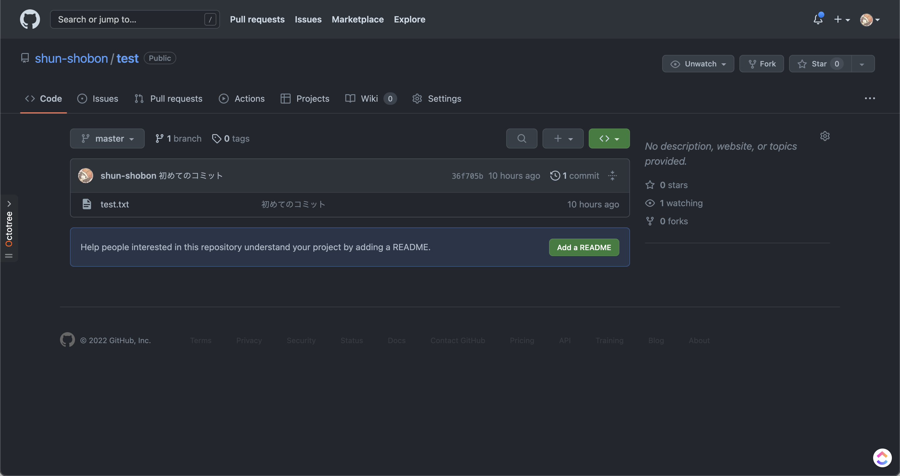
GitHubのリポジトリ画面ではコミット履歴や各コミットでの変更点、ファイルの閲覧をすることが出来ます。色々触ってみて遊んでみてください！
リポジトリ名の下のPublic/Privateは他人からのリポジトリの見え方を選択する部分です。Publicにすると全世界に公開されますし、Privateは自分(と招待した人)しか見ることが出来ません。
SSHでもプッシュは可能ですが、少しセットアップが面倒です。詳しくは調べてみてください。
originには起源や原点や由来といった意味があります。